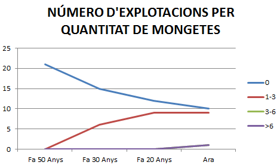
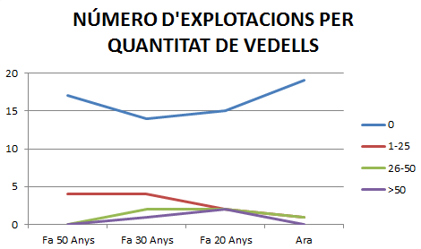
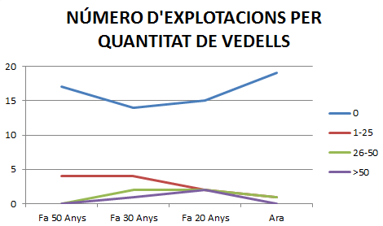
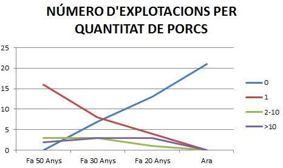

EVOLUCIÓ DELS USOS DE LES MASIES
Introducció
Som en Joan Codina, l’Enric Ros i l’Oriol Velasco de 4tA de l’institut de la Roca. Dos de nosaltres vivim en masies, i hem triat el tema perquè és una cosa que ens interessa i ens toca de prop. Amb projecte de recerca “Evolució dels usos de les cases de pagès”, pretenem esbrinar més coses sobre les activitats agrícoles i ramaderes que es desenvolupen al nostre municipi, i com han evolucionat al llarg dels anys. Hem escollit aquest treball per analitzar si també a la Roca, com en molts altres llocs, s’abandona cada vegada més el camp.
Objectius
-Conèixer les activitats agrícoles i ramaderes que es duen a terme actualment al nostre municipi.
-Observar com han canviat les activitats en les darreres dècades.
-Conèixer les causes d’aquest possibles canvis.
-Comparar les dades obtingudes amb la resta del Vallès.
Cos del treball
Agricultura
Ramaderia
Explotació forestal
En aquest gràfic, veiem com les patates i la vinya desapareixen del tot. És especialment important en el cas de les patates, que eren un dels conreus més importants a la Roca. A més a més, apareixen les mongetes seques com a nou tipus de conreu (actualment s'ha aconseguit la denominació d'origen)
La vinya i les patates són dos tipus de conreus que han baixat molt a la Roca. Gairebé totes les cases tenien vinya, per a l'autoconsum, i es sembreven moltes patates que s'exportaven al Regne Unit. El descens d'aquests tipus de conreu és degut al fet que eren molt manuals i costosos, i orientats a l'autoconsum, que ha desaparegut molt. A més a més, en el cas de les patates, també va ser determinant l'importació de patates franceses a un preu molt més barat.
El farratge i els cereals, en canvi, són conreus que s'han mantingut bastant, degut a que s'han pogut adaptar a la mecanització de manera molt fàcil. El conreu de farratge va augmentar molt fa 30, quan es van muntar moltes granges de vaques de llet.
Les mongetes, que eren un conreu que es feia poc, han anat augmentant, fins a aconseguir actualment la denominació d'origen. L'augment és degut a les millores en el camp de conservació dels aliments i les pesticides, ja que les mongetes eren un conreu que agafaven moltes malalties.
En aquest gràfic, veiem com ara fa 30 anys, es produeix un gran boom de ramaderia. Es deixa de fer a cada casa de tot i la gent comença a espeialitzar-se. Els porcs disminueixen i creixen molt el nombre de bovins (vaques de llet i vedells d'engreix) i conills (tot i que es tractava d'una sola granja).
Les gallines i els conills havien sigut, fins fa 40 o 50 anys, únicament per a l'autoconsum i per a vendre els excedents al mercat de Granollers. Amb la desaparició de l'autoconsum, han disminuit el nombre de cases que en tenen pocs, tot i que s'han posat granges amb un gran nombre de conills i gallines, orientades totalment al mercat.
 

Es va produir, fa entre 20 i 30 anys, un gran boom de la explotació lletera. Moltes cases van invertir-hi diners i van treure les vaques de les quadres i posar-les en granges. Més endavant, degut a l'importació d'excedents francesos a un preu molt barat, només les cases fortes van poder fer una inversió encara major, i moltes granges van treure les vaques i van posar vedells d'engreix.
Els porcs han desaparegut de les cases de la Roca. La desaparició de l'autoconsum, un cop més, va ser el que va fer que moltes cases traguessin el porc que tenien per a ells mateixos. A més a més, les granges que s'hi dedicaven van deixar de fer-ho degut a una temporada de preus irregulars de la carn de porc, i a unes malalties que els va afectar.
Pel que fa a l'explotació forestal, el bosc s'ha mantingut net, i se n'ha obtingut un benefici fins fa uns 30 anys. Hi havia els carreters, que feien feixos de gabella (arbustos, com el bruc) i de costals (fusta de pi) per a vendre a Granollers. A la Roca hi havia uns 7 o 8 carreters, que feien 2 viatges cada dia. La gabella es venia als forns d'obra, a tant la càrrega (3 feixos); els costals es venien als forns de pa, també per càrrega, però aquesta de 4 feixos.
Hi havia també la figura dels carboners, que vivien a la montanya i es dedicaven a fer carbó. Solien no ser gent del poble, sinó gent que venia de fora. Fa uns 50 anys, 14 famílies feien de carboners, visquent permanentment en barraques a la montanya.
A poc a poc, el bosc ha anat deixant de ser rendible, degut a l'ús de tots els combustibles fòssils i l'electricitat. S'ha anat abandonant, i, actualment no s'explota el bosc i, tot i que algunes cases que tenen bosc, segueixen tallant llenya per a consum propi, la major part està abandonat i brut del tot.
Carreter i família carregant un carro de costals, al Pi Gros de Santa Agnès
Conclusions
La hipòtsi que haviem plantejat no era certa del tot. Sí que és veritat que la majoria de cases ja no es dediquen plenament a les activitats agrícoles i ramaderes, però, les cases que segueixen fent-ho, produeixen molt més a l'engròs, degut a la mecanització. Fa 50 anys la Roca produïa 2000 litres de llet diaris, i, actualment, Can Solei, la casa amb més vaques, en produeix 7000 al dia.
L'autoconsum ha desaparegut gairebé del tot, i les activitats que s'havien de fer manualment, també. Així, la vinya s'ha convertit en bosc, zones urbanitzades o camps de conreu (cereal o farratge). També les patates, com a activitat manual, i els porcs, gallines i conills, com a explotació per a l'autoconsum, han disminuit del tot.
Primera màquina batedora de cereal que hi va haver a la Roca, batent a l'era de Can Quana.